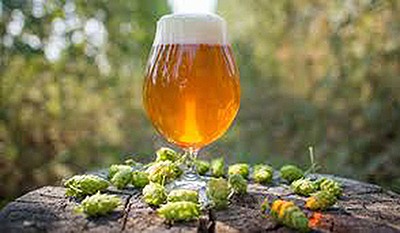

INDIA PALE ALE
A Brief History
Legend has it that India Pale Ale (IPA) was first invented by the British in the late 1700's...by accident. As demand for beer grew, it became increasingly difficult to transport ales over long distances without it spoiling, and in regions like India, it was too hot to brew beer. To solve this problem, a London brewer named Hodgson decided to brew a beer with a higher alcohol content and more hops, which would act as preservatives. The beer not only survived the journey to India, but was found to have improved considerably. Lo and behold, the IPA was born.
Over time, as palates became more refined and brewers looked for something new, a natural progression happened. Brewers started demonstrating their skill with bigger and bigger beers, fortified with massive doses of hops. IPA has evolved to become the world's most popular style of craft beer, and the top-selling craft beer in America.
Styles & Characteristics
IPA is characterized by an abundance of hops which gives the beer it's bitterness, pleasant aroma, and complex flavor profile. Toffee, citrus, tropical, and floral notes are common. Appearance can range from a pale, golden color to a deep amber, though black IPA's also exist. Here are the 6 most common styles of IPA:
English IPA: A well balanced IPA; strong, malty character with roasted toffee flavors. 5-7% ABV
American IPA: A fragrant and pungent IPA; hoppy, bitter character with tropical notes. 5-7% ABV
Double(Imperial) IPA: A stronger, more robust IPA; complex character; higher alcohol content. 8-10% ABV.
Session IPA: A lighter IPA with big flavor; lower alcohol content; allows drinkers to enjoy several without getting too full. 3-5% ABV
White IPA: Similar color, body, and notes as witbier with a noticeable hop aroma, flavor and bitterness. 5-7% ABV
Black IPA: Brewed with the addition of dark specialty malts, resulting in a dark brown to black IPA with a hint of roasted malt flavor. 6-9% ABV
Fun Facts
- Craft beer continues to lead all beverage alcohol segments in dollar sales growth
- There are more than 5000 breweries in the U.S. Almost all (99%) are small and independent craft brewers
- IPA's account for more than 30% of all craft beer sales in restaurants and bars
- There are over 80 varieties of hops
- There are many different styles of IPA; American is the most popular